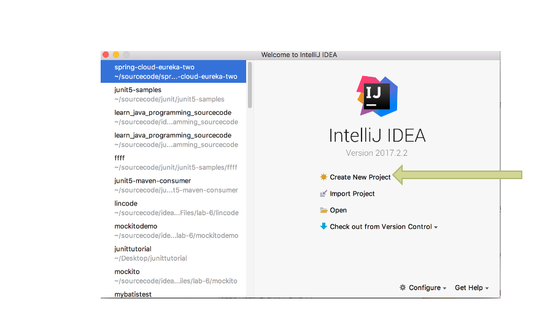
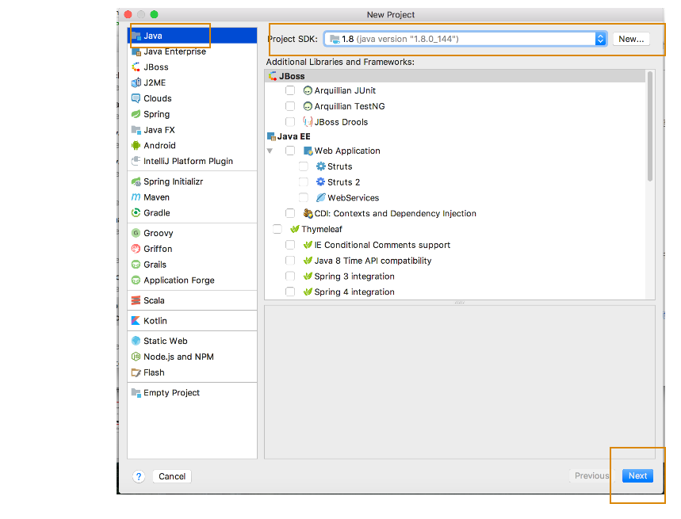
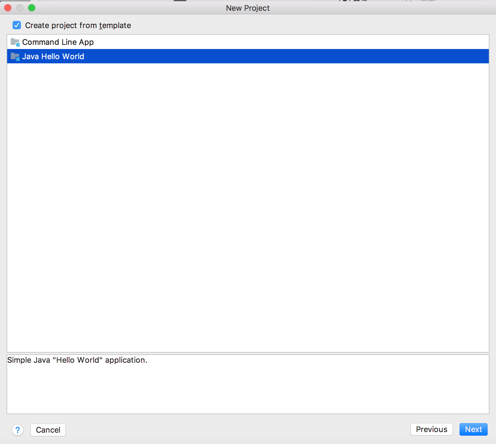
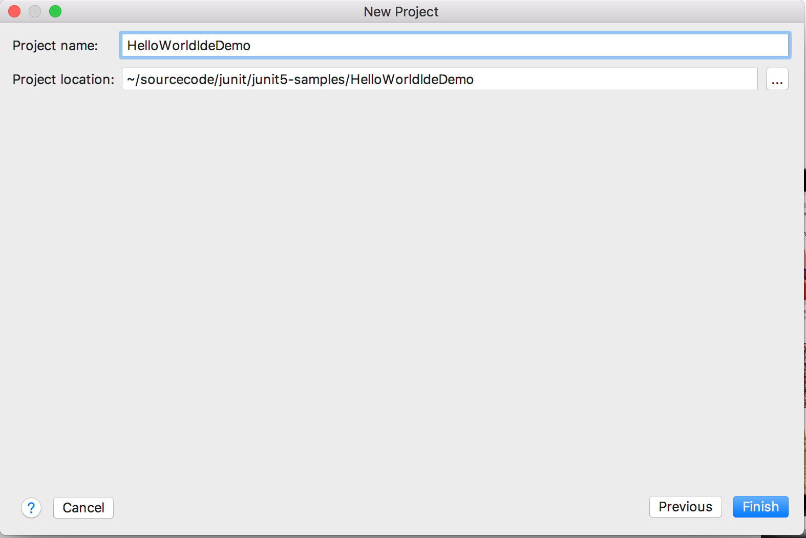
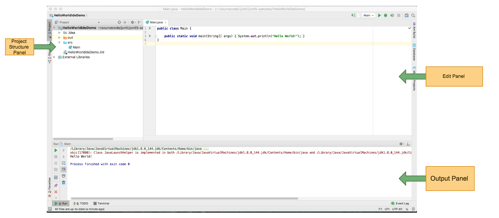

Developing Java Program Using Intellij IDE
You can edit,compile run and debug Java Program Using Intellij IDE.
You can download the IDE here
This tutorial will shows step by step approach to create a project ,create a class and compile&run a class in Intellij IDE.
Here are the steps to create a Java project in Intellij IDE:
Choose Create New Project 
Select Java Project and JDK version select JDK8 & click next button 
Choose Create project from template & Choose Java Hello World & Click Next button 
Enter a project name you want & choose the project location & click Finish button on the right corner 
You will see a welcome page 
Video